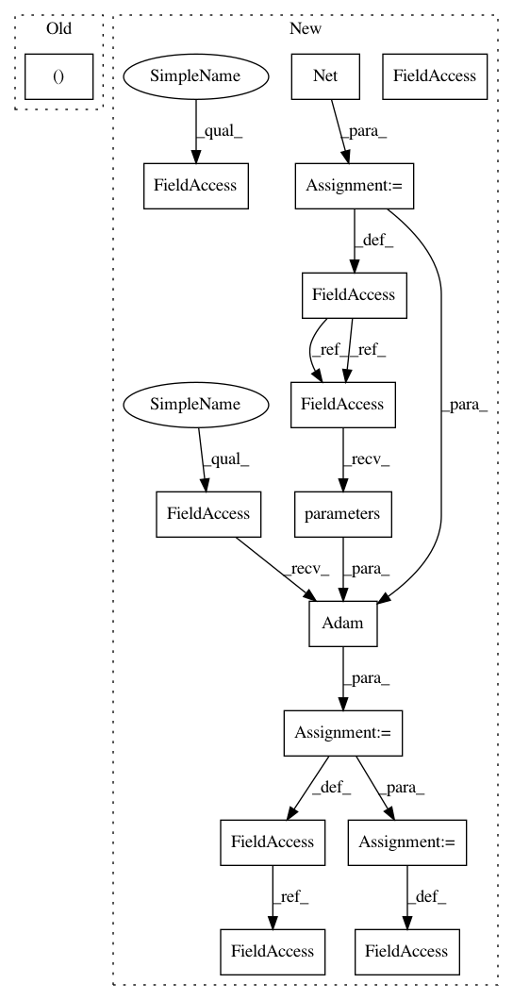

04ad358395c7bd074ffb9af235ccb76d2c0dc4cc,examples/pna.py,,,#,62
Before Change
for epoch in range(1, 301):
train_loss, val_loss = train()
print("Epoch: {:03d}, Loss: {:.8f}, Val Loss {:.8f}".format(epoch, train_loss, val_loss))
train_acc, val_acc, test_acc = test()
After Change
return self.mlp(x)
device = torch.device("cuda" if torch.cuda.is_available() else "cpu")
model = Net().to(device)
optimizer = torch.optim.Adam(model.parameters(), lr=0.001)
scheduler = ReduceLROnPlateau(optimizer, mode="min", factor=0.5, patience=5,
min_lr=0.00001)
def train(epoch):
model.train()
In pattern: SUPERPATTERN
Frequency: 3
Non-data size: 15
Instances
Project Name: rusty1s/pytorch_geometric
Commit Name: 04ad358395c7bd074ffb9af235ccb76d2c0dc4cc
Time: 2020-07-01
Author: matthias.fey@tu-dortmund.de
File Name: examples/pna.py
Class Name:
Method Name:
Project Name: Scitator/catalyst
Commit Name: 2775c15702fd52f081ff8fded51f4f38877659df
Time: 2019-08-01
Author: scitator@gmail.com
File Name: examples/_tests_scripts/z_classification.py
Class Name:
Method Name:
Project Name: rusty1s/pytorch_geometric
Commit Name: 04ad358395c7bd074ffb9af235ccb76d2c0dc4cc
Time: 2020-07-01
Author: matthias.fey@tu-dortmund.de
File Name: examples/pna.py
Class Name:
Method Name: